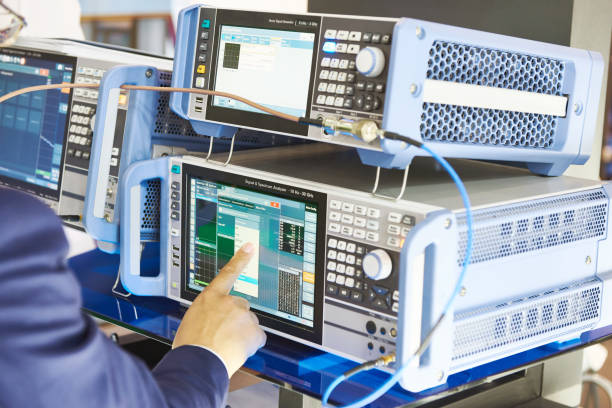

Microwave and Communication Engineering is a specialized branch of electronics and communication engineering that focuses on the design and analysis of microwave systems and communication technologies. This field involves the study of high-frequency electromagnetic waves used in various applications, including radar systems, satellite communication, mobile communication, and wireless networks. Microwave engineers design devices and systems that operate in the microwave frequency range, typically from 1 GHz to 100 GHz, which includes components such as antennas, waveguides, and amplifiers. Students in this field learn about transmission lines, signal processing, modulation techniques, and the principles of microwave circuits and systems.
The field of communication engineering also includes the study of modern wireless communication technologies, such as 4G, 5G, and beyond, along with emerging technologies like Internet of Things (IoT) and optical communication. Microwave and communication engineers play a vital role in the development and optimization of communication systems that enable high-speed data transfer, secure communications, and real-time connectivity. With a focus on both theoretical concepts and practical applications, this branch equips students with the knowledge needed to work in industries related to telecommunications, broadcasting, defense, and satellite communications, where high-frequency systems are essential for efficient and reliable communication.

Microwave and Communication Engineering
Behind every signal, there’s a story; behind every circuit, a possibility. Keep building your masterpiece."
.jpeg)
Microwave and Communication Engineering Lab Facility
The Microwave and Communication Engineering lab facilities at our college are equipped with advanced tools and instruments to provide students with hands-on experience in designing and testing microwave and communication systems. The labs feature microwave signal generators, spectrum analyzers, and network analyzers, allowing students to generate and analyze high-frequency signals for various communication applications.
In addition to core microwave and communication systems, the labs offer equipment for testing and analyzing wireless communication systems, including antenna design, radio frequency (RF) systems, and satellite communication setups. The labs also provide resources for students to explore digital communication systems, signal processing, and error correction methods.
In addition to core microwave and communication systems, the labs offer equipment for testing and analyzing wireless communication systems, including antenna design, radio frequency (RF) systems, and satellite communication setups. The labs also provide resources for students to explore digital communication systems, signal processing, and error correction methods.
